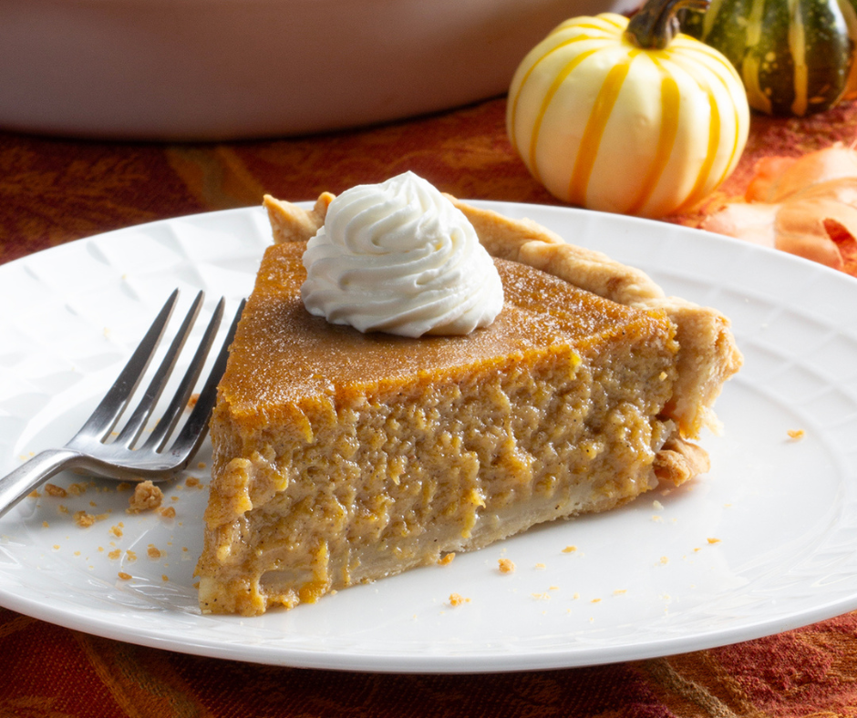

I'll say upfront that this pie is a project.
When I was making dozens of these at a time, the workload was a bit
different than when making just one for your family. To assemble this pie,
you'll need to roast butternut squash, caramelize onions, make and blind-bake pie dough,
assemble the filling, and bake the pie.